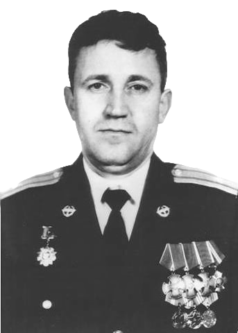

Командир вертолетного звена Ми-24. Летчик 1-го класса.

Годы жизни
1963 — 2002
Родился в селе Александровка Кустанайской области Казахской ССР.
Окончил Саратовское ВВАУЛ. Начало пути офицера.
Служил в 55-м отдельном вертолетном полку (ОВП). Командир звена на Ми-24.
26 сентября 2002. Ингушетия.
Пара Ми-24 под командованием Власова уничтожала банду. По вертолетам было 3 пуска ракет ПЗРК, но летчики подавили точки врага.
Повторные заходы уничтожили до 30 боевиков. Экипаж действовал максимально профессионально.
Бандиты пустили две ракеты «Игла». Майор Власов прикрыл ведомого, уклонился от первой, но вторая попала в машину.
«Спасая жизни мирных жителей, он увёл горящий вертолет к окраине села...»
Указом Президента РФ от 28 апреля 2003 года за мужество и героизм, проявленные при выполнении воинского долга.
Похоронен в городе Кореновске